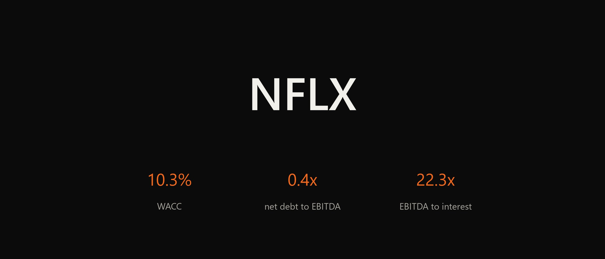
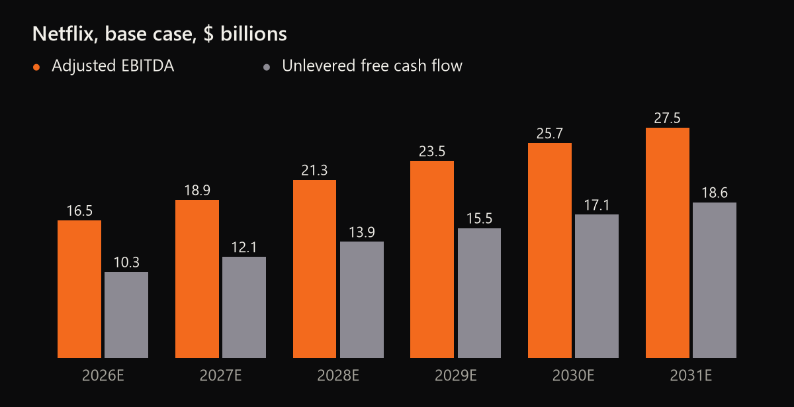
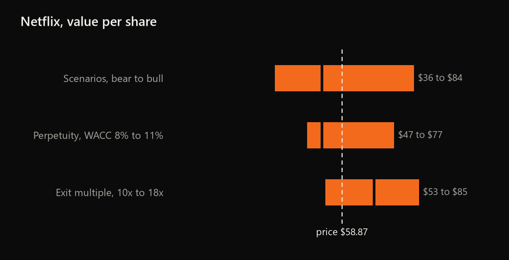

Netflix DCF model.

Netflix is the streaming business the other four are trying to build. At 17 times EBITDA, what does the price already assume?
The question, the method, the finding, and what it means
- The question
- At 17 times EBITDA, what growth and margin does the Netflix price already assume, and is that a fair benchmark for Skydance's streaming line?
- Data and method
- 2026 guidance of $51 billion of revenue and a 31.5 percent operating margin, split into subscription and advertising, discounted at a 10.3 percent WACC with content amortization kept inside costs.
- What I found
- The model gives $49.79 a share on the perpetuity method and $68.16 on the exit multiple, against a $65.85 price. The price requires 5.1 percent growth in perpetuity or a multiple of 14 times or more in 2031.
- What it means
- Netflix borrows at 85 bp over Treasuries with almost no leverage, so the market prices it as the safest credit of the five and the richest equity. Skydance's streaming case rests on reaching margins Netflix took a decade to earn.
The benchmark for the Skydance streaming line
Skydance's base case grows streaming 9 percent fading to 4. Netflix grew 13 percent in 2026 on $51 billion of revenue at a 31.5 percent operating margin. If I assume Skydance can grow streaming, I should know what the leader earns doing it and what the market pays for it.
Netflix walked away from Warner Bros. Discovery in February 2026 with a $2.9 billion termination fee. I exclude that fee from cash flow.
The numbers
The base case on the perpetuity method, at a 10.3 percent WACC and 3 percent long term growth. This is below the $65.85 close on October 23, 2026.
The base case on the exit multiple method, at 14 times 2031 EBITDA. This is above the market price. The two methods disagree by $18, and that gap is the central finding.
The perpetual growth the price implies. A 10 percent discount rate and 3 percent growth cannot reach $66 on a business that already earns 32 percent margins.
The share of value that falls after 2031. As with most growth companies, the valuation rests largely on the terminal value.
The range from bear to bull across both methods. The bear case fades subscription growth to 3 percent with flat margins, and the bull case keeps growth in double digits through 2028 and lifts margins to 39 percent.
Market EV to 2026 EBITDA. By comparison, Skydance trades at 10, Disney at 9, Fox at 8 and Comcast at 4.5.
These are model outputs under stated assumptions. Nothing on this page is a recommendation to buy or sell anything.
Inputs that differ from the template
- Base year. 2026 guidance of about $51.1 billion of revenue and a 31.5 percent operating margin from the October 20 shareholder letter, split into subscription and about $2.7 billion of advertising.
- Revenue. Subscription grows 10 percent fading to 5. Advertising grows 40 percent fading to 15 off a small base, with 15 new ad markets in 2027.
- EBITDA. Operating income plus property depreciation only. Content amortization, $16.4 billion in 2025, stays inside costs. The margin rises about a point a year to 36 percent by 2031.
- Content cash. Netflix spends about 1.1 times what it amortizes. The excess, about 3.3 percent of revenue, sits in the working capital and content line and fades to 2 percent as spending growth slows.
- Discount rate. Unlevered beta 1.2, almost no leverage, so the WACC is close to the 10.5 percent cost of equity. Cost of debt 5.8 percent, the July 2026 notes repriced about 85 bp over today's Treasury.
- Equity bridge. $15.3 billion of gross debt, $8.2 billion of cash, about 4,164 million shares. The share count is an estimate from market cap over price because I could not retrieve the 10-Q cover, and it is flagged in the model.
Two pictures

Base case EBITDA, free cash flow and revenueRevenue reaches about $80 billion by 2031. Free cash flow conversion is high because capex is 1.5 percent of revenue and the content line is small relative to the margin. 
Where the answers landThe perpetuity grid reaches the price only below a 9.5 percent WACC. The exit multiple grid straddles it at every WACC. Street targets run $57 to $126.


I took the quoted beta at face value
A beta of 1.61 taken from a quote page gave an 11.6 percent WACC and $42 a share. That beta is a five year regression on a stock that fell by half in 2022. I used 1.2 and recorded the reasoning, and the sensitivity grid runs from 8 to 11 percent so that a reader can restore the 1.61.
In order of how much they move it
- The exit multiple. Each turn of EBITDA is worth about $4 a share. 14 times is below the 17 the market pays today and above where a company growing 5 percent should trade in 2031.
- Margin ceiling. The base case stops at 36 percent. Every point of terminal margin is worth about $1.50 a share.
- Advertising. The October 20 letter cut 2026 ad guidance from about $3 billion to $2.7 billion. Advertising is 5 percent of revenue, so this is a small line to which the market gives considerable weight.
- The share count. If the real count is 4,195 million, the diluted figure, every value on this page is about 0.7 percent lower.
The model
Download the Excel model · Back to the five
Blue cells are inputs. Pick a scenario in Inputs cell C5. Sources are numbered and cited next to each figure. Nothing in the model comes from a Bloomberg Terminal or from any employer.